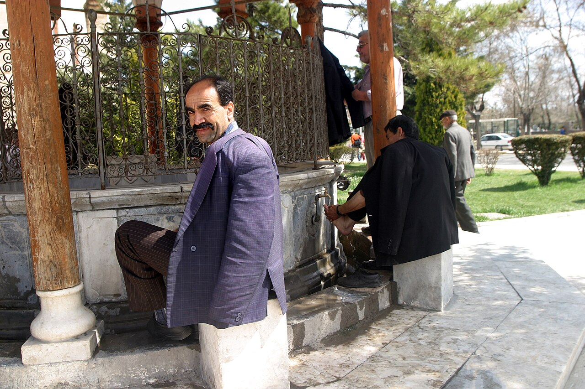

How to perform wudu, ghusl, and tayammum: the basics of ritual purity
Ritual purity (tahara) is a condition for prayer and many acts of worship. This reference explains, simply and chiefly according to the Hanafi school and on the basis of the Qur'an and reliable sources: the obligatory and recommended acts of wudu (ablution) and what invalidates it; when ghusl (full washing) becomes obligatory and its essentials; and tayammum, performed with clean earth when water is unavailable. This is general religious information; for specific questions consult a local imam or scholar.

In Islam, purity (Arabic: tahara) is a condition for many acts of worship, especially the prayer (salah). Purity takes three main forms: wudu (ablution) — purification from minor impurity; ghusl — washing the whole body to remove major impurity; and tayammum — dry purification with earth when water is unavailable or cannot be used. This reference presents the general procedure chiefly according to the Hanafi school, widespread in Uzbekistan, on the basis of the Qur'an and reliable sources; certain differences between the schools are noted separately.
Why wudu is needed
The basis of wudu is set out in the Qur'an, Surah al-Ma'ida, verse 6: "O you who believe! When you rise to pray, wash your faces and your hands up to the elbows, wipe your heads, and (wash) your feet up to the ankles." Wudu is required for performing the prayer, for circumambulating the Kaaba (tawaf), and for touching the mushaf (the text of the Qur'an).
The obligatory acts (fard) of wudu
In the Hanafi school, the obligatory acts of wudu are four: 1) washing the whole face; 2) washing both arms including the elbows; 3) wiping (mash) a quarter of the head with a wet hand; 4) washing the feet including the ankles. (In the Shafi'i school, intention and order are also obligatory.) "Washing" means wetting the limb fully at least once.
The recommended acts and the order
Besides the obligatory acts, there are several recommended (sunnah) acts following the practice of the Prophet (peace be upon him): making the intention, saying "Bismillah," first washing both hands up to the wrists, using the miswak or cleaning the teeth, rinsing the mouth (madmada), drawing water into the nose (istinshaq), washing each limb three times, starting from the right, washing the limbs in order and without interruption (muwalat), and wiping the ears and neck. In the Hanafi school, order and continuity are recommended, not obligatory.
What invalidates wudu
Among the things that invalidate wudu are: using the toilet (urination or defecation), passing wind, anything exiting from the front or back passage, deep sleep (while lying down), fainting, or intoxication. In the Hanafi school, blood or pus that flows from the body, and a mouthful of vomit, also invalidate wudu. (There are some differences between the schools on these matters.)
When ghusl becomes obligatory
Ghusl is washing the whole body to remove major impurity (janaba). Ghusl becomes obligatory in the following cases: janaba (sexual intercourse or the emission of semen), the end of menstruation (hayd), and the end of postnatal bleeding (nifas). In addition, performing ghusl before the Friday and Eid prayers, on entering ihram, and on the Day of Arafah is recommended (mustahabb).
The essentials of ghusl
In the Hanafi school, the obligatory acts of ghusl are three: 1) rinsing the mouth (madmada); 2) drawing water into the nose and cleaning it (istinshaq); 3) washing the entire body so that no dry spot remains. (In the Shafi'i school, the intention and washing the whole body are obligatory, while rinsing the mouth and nose are recommended.) After ghusl, a separate wudu is not required — the ghusl itself takes the place of wudu.
Tayammum: when there is no water
When water cannot be found, or cannot be used because of illness, tayammum is performed instead of wudu or ghusl. Its basis is likewise given in Surah al-Ma'ida, verse 6. In tayammum, the hands are struck on clean earth (soil, sand, or a stone-like mineral of the earth), and then wiped first over the face and then over both hands. Once water becomes available or the excuse is removed, tayammum loses its validity and wudu or ghusl is performed again.
Note
This text is general religious information, chiefly according to the Hanafi school, and does not cover every particular case. There are some differences between the schools. For precise and personal questions it is recommended to consult a reliable religious source, the local mosque imam, or a qualified scholar.